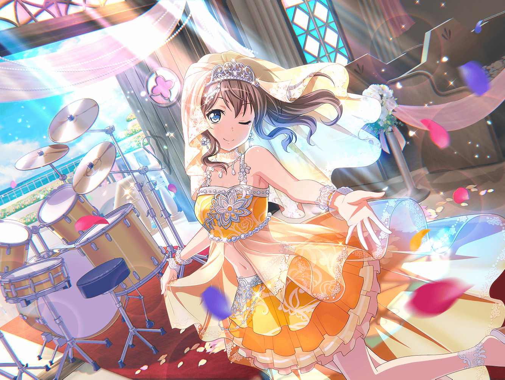

住宅街
沙綾
あっ……！
こ、ここにもあった……
沙綾
う……恥ずかしい……
こんなところにも貼ってあるなんて……
沙綾
あ、{{userName}}さん！？
沙綾
あはは、
こ、こんなところで会うなんて奇遇だね……
沙綾
え、ええっ？ 挙動不審に見える？ 私が？
いやいや、いつも通り、普通っ！
ただ、こんなところで会うと思ってなくて……
沙綾
ほ、本当だって！
な、何でもないってば……！
沙綾
……{{userName}}さん、商店街でポスター、見た？
沙綾
いや、その……ポスターはポスターだよっ。
見てないなら……って、
あっちの電柱にもポスターが！？
沙綾
あっ！ {{userName}}さん！
そっちに行っちゃ……！！
沙綾
あぁ……
見た……よね……
沙綾
あ、はは……
はい、これ……私です
沙綾
実はこの前、知り合いに頼まれて、
結婚式の新婦役のモデルになったんだ
沙綾
ん～、商店街の付き合いっていうか……
沙綾
その、困ってる人を放っておけないじゃない？
沙綾
あと、少しウェディングドレスに興味があったっていうのも
あるけど……
沙綾
でも、まさかこんな早く着ることになるなんて思わなかったよ
沙綾
似合ってます？
え、へへ……ありがとう
沙綾
でも私、モデルなんてしたこともなかったから
撮影がはじまっても不安と緊張でほんとに
ドキドキしっぱなしで……
沙綾
それで、どうしようって思ってたら、
新郎役の人がやって来て……ふふっ、
誰だったと思う？
沙綾
プロのモデルさん？
ん～、おしいっ！ いや、ある意味プロ以上かも……？
沙綾
なんと、ハロハピの薫さんだったんだ！
ビックリだよね
沙綾
薫さんって、すごいんだよ！
演劇部だからっていうのもあるけど
こう……オーラが違うっていうか……
沙綾
うーん、なんだろ？
場慣れしてるっていうか、堂々としてて
沙綾
黙ってると、かっこいいんだけど、口を開けば「儚い……」って。
ふふっ、薫さん、おもしろいっていうか不思議な人だよね？
沙綾
でも、薫さんのおかげでカメラの前でも笑顔でいられて。
ちょっぴりリラックスできたんです。
……相手が薫さんでよかったあ……
沙綾
……ま、撮影が順調かと思いきや、巴とあこが乱入してきたり、
いろいろ大変だったけどね
沙綾
あんな慌てた巴、はじめて見たし
沙綾
……私が撮影が不安だって言ったときにりみりんが
言ってくれたんだ
沙綾
きっかけはどんなことであれ、
やったことない事に
チャレンジする勇気は、すごいと思う……って
沙綾
その言葉のおかげで、私は撮影のお手伝いを頑張ろうって
思えたし……
沙綾
撮影中も、香澄達や、薫さんたちにたくさんたくさん
支えてもらって、こなすことができて
沙綾
なんだか、ちょっとしたことでもまわりのみんなに
助けられてるんだなあって感じたんだ
沙綾
私、自分から誰かに甘えるっていうか、助けてもらったりすることってあんまりうまくできなくて。なんか、申し訳なくなっちゃったり、ソワソワしちゃって。でも……
沙綾
最近はちょっとずつそういう雰囲気に慣れてきたんです。
みんなのフォローが心地よい感じがして、悪くないなって
沙綾
これからはもっと甘えてみようかなーなんて？
沙綾
あははっ。さすがにそれは性には合わなそうだけど。
支えあうってこういうこと、なんだよね。きっと
沙綾
……ちょっと話がそれた気もするけど、
そのくらい私にとっては大きなことだったってことで！
沙綾
さて。みんなに助けてもらったぶん、お返ししていかないと！
とりあえずりみりんへのお返しは……チョココロネでいいかな？
ふふっ♪